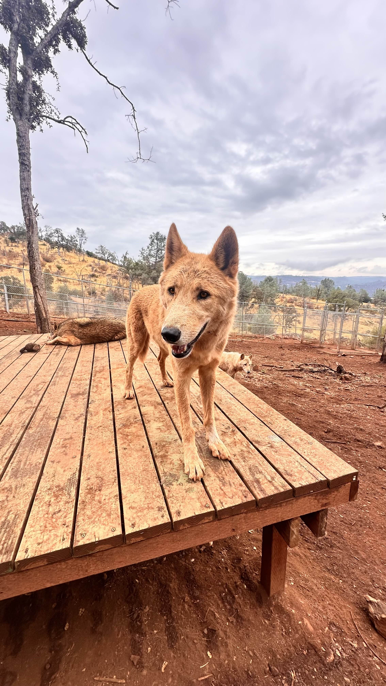
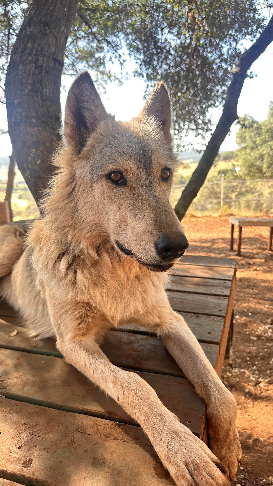
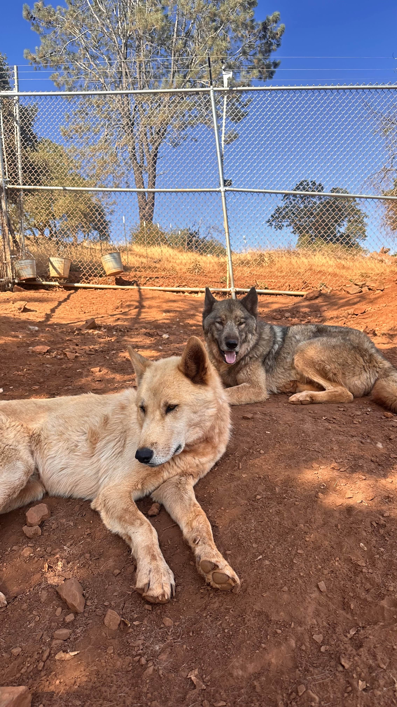

El Dorado County
Wolf-dog sanctuary and rescue — rehabilitating and re-homing captive-born wolves and wolf-dogs.
Over 1 million wolves were killed across the United States through government-funded extermination campaigns that mirrored the broader oppression of the wild — and of women and Indigenous peoples. Coexistence, community, and nature have been silenced under systems that value profit over balance.
Women for Wolves was founded to change that. Our mission is to amplify diverse voices in conservation through grants, advocacy, rescue, and partnerships that unite science, storytelling, and spirituality in defense of the wild.
In conservation today, women remain vastly underrepresented — with less than 3% of global environmental leadership roles held by women — while Indigenous perspectives continue to be excluded from wildlife management decisions. Meanwhile, wolves remain persecuted: over 1,400 wolves were legally killed in the U.S. between 2021 and 2024, and up to 90% of captive wolf-dogs are euthanized. Our approach reimagines conservation as collaboration. We empower women, Indigenous groups, and local communities to lead coexistence efforts that protect apex predators and restore the ecosystems we all depend on.
In an industry where women are outnumbered by men 100:1 at the operational level, Women for Wolves places women in authentic leadership roles and builds pathways for the next generation of female conservationists — while safeguarding a future for wild wolves.
Our agenda: to end wolf trapping and hunting nationwide, reform outdated wildlife management systems, and restore wolves to their rightful ecological role as keystone species.
Drag the handle to see how wolf territory has declined since colonization.
Through compassionate sanctuary care and rehabilitation programs that give wolves and wolf-dogs a second chance at life.

Through bold policy action, storytelling, and education, we challenge outdated management systems and protect wolves, wildlife, and wild places.

Through women-led initiatives, Indigenous partnerships, and youth programs, we awaken purpose, leadership, and coexistence for future generations.

The least I can do is speak out for those who cannot speak for themselves.
— Jane Goodall
Founded in 2013 by conservationist and animal activist Anjali Ranadive, Women for Wolves began as a grassroots movement to protect wolves and rekindle the feminine connection to the natural world.
After facing depression and self-harm, Anjali found healing through rescuing and caring for wolves and wolf-dogs — animals once misunderstood and feared. In saving them, she discovered they had saved her.
What began as a personal journey has evolved into a movement — a sanctuary for wolves and wolf-dogs, a conservation organization, and a haven for women to reconnect, learn, and rise together.
At its heart, Women for Wolves is about healing — of people, of animals, and of the planet we share.
Wolf-dog sanctuary and rescue — rehabilitating and re-homing captive-born wolves and wolf-dogs.
Advocacy and non-lethal coexistence strategies protecting wild wolves.
Advocacy, media, and education changing the narrative around wolves and rewilding culture.
Follow our journey — rescues, wolves, and conservation in action.
Follow, share, and take action for wolves at @womenforwolves.
We are honored to collaborate with Indigenous communities whose cultural knowledge, land stewardship, and spiritual connection to wolves guide our mission.
Trusted by and featured on:
Subscribe to our newsletter for the latest wolf news, updates on our sanctuary & more.
We respect your privacy. By subscribing you agree to our Privacy Policy.